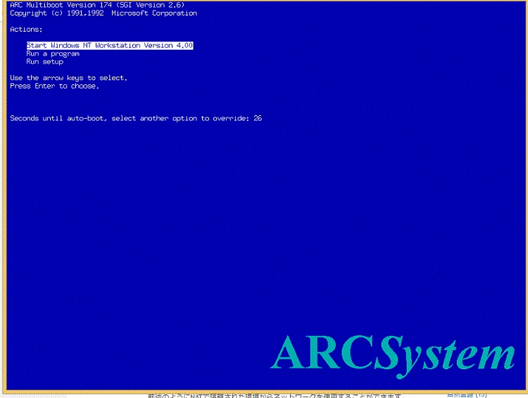
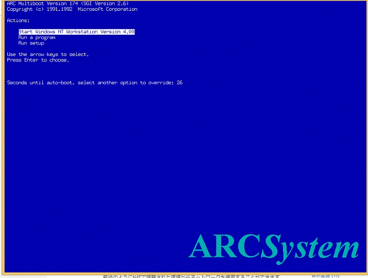
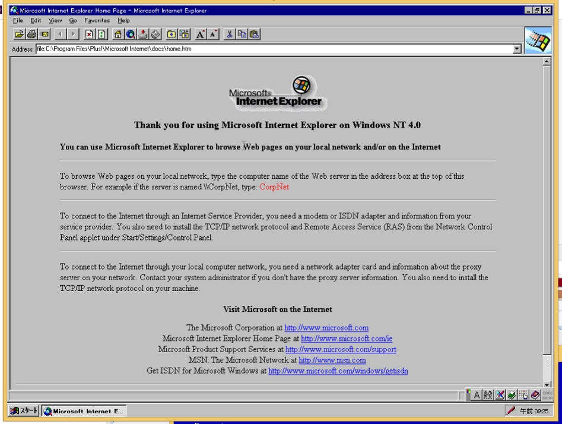
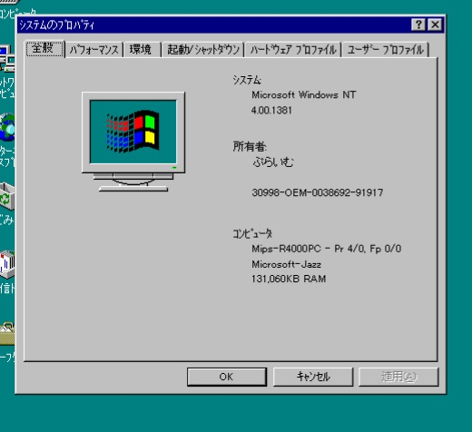

http://www.microsoft.com/japan/products/ntwork/
クリーンインストール後の手順
Microsoft(R) Windows NT(R) 4.0 日本語版 Service Pack 3 のダウンロード
Microsoft(R) Windows NT(R) 4.0 日本語版 Service Pack 4 のダウンロード
ダウンロード先
Internet Explorer 4.01 SP2, 5.5 SP2, 6.0 SP1 Trekkerの小市民日記
Internet Explorer 4.01SP2 をサルベージ - Windows 2000 Blog

＊SP6aをインストールする前にIE5.5or6をインストールしないでください。IE5.5以降は暗号化が128bit,sp6aは56bitのため、そのままではインストールに失敗します。
対策法JP250867 - 高度暗号化の IE があると Service Pack 6a をインストールできない
Internet Explorer 5.5 日本語版 ダウンロードページ
IE5.01(直リンク)
Internet Explorer 5.01 日本語版 ダウンロードページ
Internet Explorer 6 Service Pack 1 サルベージしました - Windows 2000 Blog
Post-Windows NT 4.0 Service Pack 6a Security Rollup Package (SRP)
NT SP6aを適用した後のHotfix
Microsoft TechNet
IE6で表示で閲覧できるサイトまとめ(随時更新)

IE6である程度閲覧できるサイト
| 2ch関連 | |
| Windows NTが好き！SP1～SP7 | |
| 仮想マシン |
| VMware Player 6でWindows NT 4.0を動かす - Diary on wind |
| QEMUでNT4/MIPS - 七誌の開発日記 |
| Qemu（MIPS）にWindows NT 4.0をインストールする-Computer History Wiki |
| Hotfix他 | |
| Windows NT 4.0 Service Pack and Hotfixes | Windows NT 4.0サーバーに.NET Framework 1.1をインストールする |
| Microsoft techNet NT4 Hotfix | 過去のNTセキュリティ関連情報 |
| https://msfn.org/board/topic/159597-guide-to-installing-and-updating-windows-nt-40-workstation/ | |
| Microsoft Windows NT 4.0 / 2000 / XP セキュリティ対応状況 | Windows NT 4.0 Updates |
| DirectX Mediaの詳細情報 : Vector ソフトを探す！ | Download Security Fix for DirectX Media 6.0 on NT 4.0 from Official Microsoft Download Center |


-
QEMUでWindows NT 4.0
   |
|  |